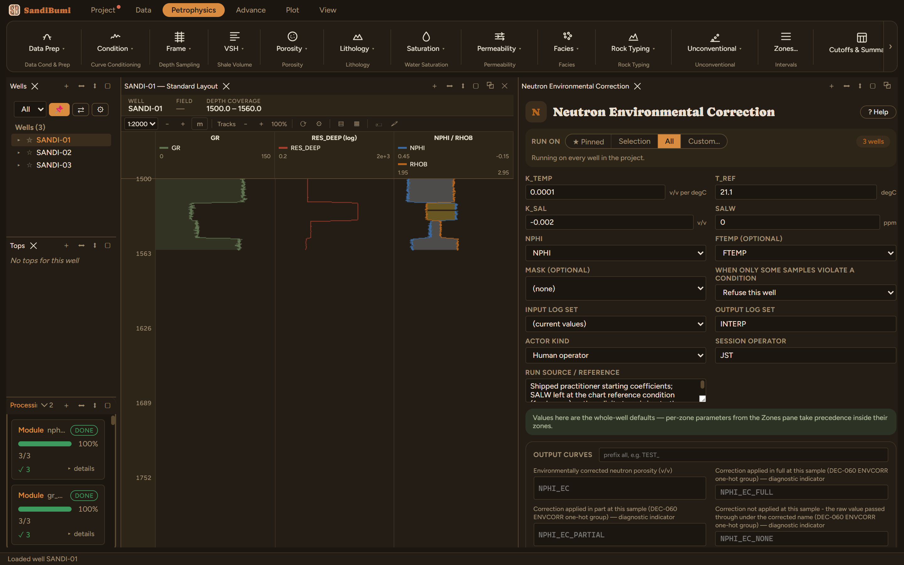

Neutron Environmental Correction moves the neutron log from the chart
reference conditions it was calibrated at to the actual borehole environment:
formation temperature and formation-water salinity. It writes NPHI_EC. Reach
for it in hot wells and saline basins; in a shallow fresh-water section the
correction is legitimately near zero, and this walkthrough shows exactly
that behaviour.
The physics
The tool's porosity charts are drawn for fresh water at a reference
temperature (T_REF, 21.1 degC, the vendor chart's 70 degF). Hotter
formation water is less dense, so it carries less hydrogen per volume and the
tool under-reads porosity; dissolved salt displaces hydrogen and does the
same. The module applies both as linearised terms:
NPHI_EC = NPHI + K_TEMP × (FTEMP − T_REF) + K_SAL × (SALW / 100000). The
coefficients are the local slopes of the vendor's environmental-correction
chart, which is where you read them for the tool in hand.
The picks and why
K_TEMP 0.0001 v/v per degC (shipped starting value): at this
dataset's roughly 99 degC formation temperature the term contributes
0.0001 × (99 − 21.1) ≈ +0.008 v/v, and the live run's median shift is
exactly +0.0078 v/v. The arithmetic is transparent enough to
check on paper, which is a QC habit worth keeping.
SALW 0 ppm (shipped): the chart reference condition itself,
so the salinity term ships inert. This is deliberate: the study, not the
module, declares a formation salinity. Run live: declaring
SALW 100000 ppm engages the term and the median shift drops to
+0.0058 v/v, the salt subtracting 0.002 v/v of apparent
porosity at that concentration.
T_REF 21.1 degC: the chart's reference temperature. Change
it only if your tool's chart states a different one.
Step by step
Run Formation Temperature (or Pre-Calculation) first: the temperature
term reads FTEMP and without it only the salinity term applies.
Open Petrophysics ▸ Data Prep ▸ Neutron Environmental
Correction.
Enter the chart coefficients for your tool, and the formation salinity
when the study has declared one.
Fill the custody line and press Run Neutron Environmental
Correction.
SALW ships at zero on purpose: the salinity term stays inert
until the study declares its water.
Reading the result
3 clean, with a median shift of +0.0078 v/v, entirely
from the temperature term. Small, and correctly so at these conditions. Check
the shift distribution in the Database Inspector:
SELECT median(g.value - s.nphi)
FROM computed_curves g
JOIN standard_curves s ON g.well_id = s.well_id AND g.depth = s.depth
WHERE g.curve_name = 'NPHI_EC'

A +0.008 v/v shift at 99 degC and fresh water: the size the
hand arithmetic predicts.
QC and pitfalls
These are starting coefficients, not the chart. Where the vendor chart
for the actual tool is available, read the slopes from it; the pane's
source notes say the same.
Do not stack this with a chart-based crossplot correction of the same
effects: the correction would be applied twice.
The whole correction here is under 0.01 v/v. If the neutron looks
wrong by 0.04, the problem is the matrix convention (the Neutron Matrix
Conversion chapter), not the environment.